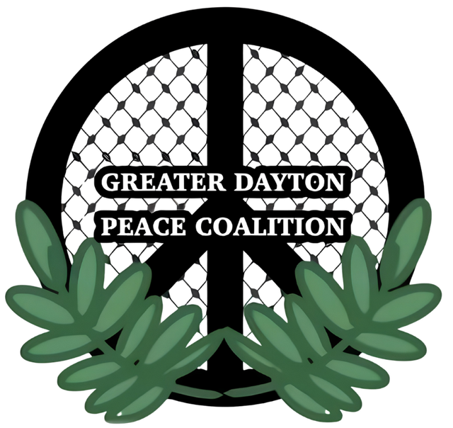

Kristina Knickerbocker
Democratic nominee · OH-10
Responded to all five questions
Visit Kristina’s campaign website
The Greater Dayton Peace Coalition sent the same five questions on Palestine, military aid, campaign finance, weapons-industry jobs, and economic diversification to both major-party candidates for Congress.
Kristina Knickerbocker responded to all five questions.
Mike Turner did not respond to the questionnaire.
Greater Dayton Peace Coalition · Candidate questionnaire
The Greater Dayton Peace Coalition sent the same questions to both major-party candidates for Ohio’s 10th Congressional District. Kristina Knickerbocker’s responses are published unedited. Mike Turner did not respond to the questionnaire.
Democratic nominee · OH-10
Responded to all five questions
Visit Kristina’s campaign website
Response status is based on GDPC’s questionnaire record. Candidate answers are reproduced unedited.
Read each question alongside both candidates’ recorded response status.
Kristina Knickerbocker
Yes, the evidence from Gaza overwhelmingly supports that Palestinians are the victim of attempted genocide from the Israeli government, with significant American funding. The situation for both Palestinians in Gaza and the West Bank is unsustainable and, of course, at odds with our American values. No one in the region will be safe until Palestinians have a state to call their own, true self-determination, and security guarantees for all civilians.
Mike Turner
Did not respond to questionnaire.
Kristina Knickerbocker
No. I support the bipartisan efforts to zero out financial support for Israel. Our taxpayer dollars are better spent improving lives for people at home.
Mike Turner
Did not respond to questionnaire.
Kristina Knickerbocker
Yes absolutely. I have been endorsed by End Citizens United which backs getting big money out of politics. I have not taken any money from Corporate PACs or AIPAC and never will.
Mike Turner
Did not respond to questionnaire.
Kristina Knickerbocker
Yes. A strong Miami Valley means a further diversified economy that everyone can participate in. Since Mike Turner has been in office over the last 30 years, we have seen major employers leave our region and not replaced.
Mike Turner
Did not respond to questionnaire.
Kristina Knickerbocker
Yes, I meet almost weekly with new nonprofit or community leaders that are tackling problems in our community. I’m also interested in working with our institutions of higher education, trade schools, and leaders in the innovation space to help create the ‘jobs of tomorrow’ as our economy goes through a significant upheaval in the face of AI.
Mike Turner
Did not respond to questionnaire.
The GDPC sent the same five-question questionnaire to both major-party candidates for Ohio’s 10th Congressional District. Kristina Knickerbocker’s answers are reproduced unedited. Mike Turner’s status is recorded as no response.
Dates and the original questionnaire link will be added when confirmed by GDPC.